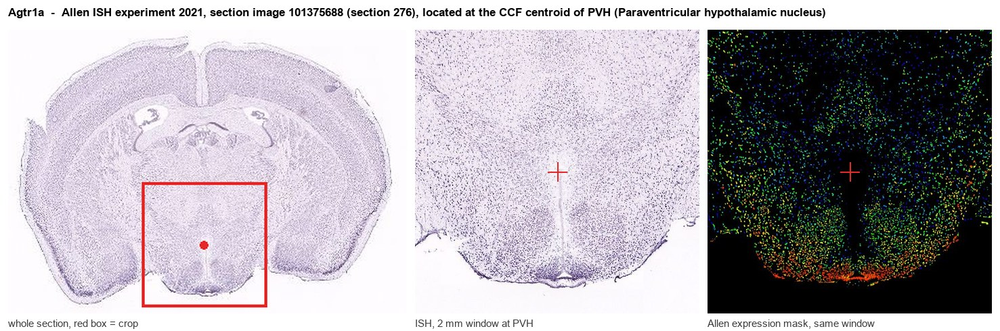

Agtr1a
Type-1 angiotensin II receptor A (Angiotensin II type-1 receptor A) (AT1 receptor A)
Spatial tier: RESTRICTED · Class: GPCR · Top region: PVH (Paraventricular hypothalamic nucleus) · Positive regions: 17/554
46.6Discovery Score
40.4Targetability Score
CEvidence grade C
What this means: Agtr1a: fine CCF profile is restricted toward PVH (top regions: PVH, OV, MEPO, IPC, SCH; 17 positive regions); direct spatial validation is still required.
Function in PVH: evidence, prediction, innovation
- Gene function
- Agtr1a encodes the angiotensin II type-1a receptor, the main rodent AT1 subtype and a Gq/11-coupled GPCR. Angiotensin II binding drives phospholipase C, IP3/DAG, Ca2+ release and PKC, depolarising neurons; it also signals through beta-arrestin. It is the central effector of the renin-angiotensin system for blood pressure, thirst, sodium appetite and stress.
- Region function
- The paraventricular hypothalamic nucleus (PVH) is the master neuroendocrine and autonomic output nucleus, containing CRH, oxytocin and vasopressin neurons plus presympathetic cells that set the HPA axis, fluid balance and sympathetic drive.
- Published in this region
- direct Direct and extensive. de Kloet et al. 2013 used Cre/lox to delete Agtr1a from PVH and found a gene-by-environment effect - on high-fat diet the mice ate more, expended less energy and became fatter, with reduced hypothalamic Crh and oxytocin expression and loss of PVH angiotensin responses, yet lower systolic blood pressure. Elsaafien et al. 2021 characterised PVH-Agtr1a neurons as the crosstalk point between the neuroendocrine and autonomic stress axes controlling blood pressure, and Frazier et al. 2021 showed an angiotensin-responsive lamina terminalis-to-PVH projection that evokes vasopressin secretion and raises blood pressure.
- Predicted function
- Prediction (largely already confirmed): Agtr1a marks PVH neurons that convert circulating and forebrain angiotensin signals into CRH, vasopressin and sympathetic output. Further manipulation should show that PVH-Agtr1a loss dissociates the normally coupled adiposity and blood-pressure responses, and that chemogenetic activation of PVH-Agtr1a neurons drives vasopressin release, pressor responses and corticosterone without requiring dehydration.
- Innovation
- ★☆☆☆☆ 1/5 Conditional PVH Agtr1a deletion, reporter mice and circuit-level recordings are all published, making this one of the best-characterised receptor-in-nucleus pairs here.
- Tools
- Agtr1a floxed mice and Agtr1a-Cre/Agtr1a-Cre-GFP BAC reporter lines (Krause/de Kloet lab), Agtr1a-null mice; AT1 antagonists losartan and candesartan; angiotensin II peptide. PVH access via Sim1-Cre, Crh-Cre, Avp-Cre and Oxt-Cre with AAV-Cre, hM3Dq/hM4Di and GCaMP fibre photometry.
- References
Direct evidence located at the region

Allen ISH experiment 2021, section image 101375688 (section 276): the section that contains the CCF centroid of Paraventricular hypothalamic nucleus according to the Allen image-to-atlas alignment (reference_to_image), with a 2 mm window around that point. Left: whole section, red box = window. Middle: ISH signal. Right: Allen's expression-mask view of the same window. open this image in the Allen viewer
Look it up yourself: Allen Mouse Brain ISH for Agtr1aAllen reference atlas: PVH (structure 38)ABC Atlas MERFISH viewer(in the ABC Atlas choose dataset MERFISH-C57BL6J-638850-CCF, colour cells by gene "Agtr1a" or by parcellation_substructure "PVH")All genes confined to PVH + 3-D brain
Direct spatial evidence
MERFISH REGION LOCATOR

Regional expression figure

Predicted WMB × fine-CCF profile; not direct full-transcriptome spatial measurement.
Spatial profile
Evidence and specificity
- Evidence status
- PREDICTED_FINE
- Direct sources
- None; predicted localization only
- Exclusive threshold
- 12 positive regions out of 554
- Spatial specificity
- 0.346
- Top-region fraction
- 0.078
- Filter status
- PASS
Interpretation limits
- Cell-type-to-region projection is imputed expression, not direct spatial measurement.
- Adult reference atlases do not establish stability across age, sex, strain, state, or disease.
- Transcript abundance does not guarantee protein abundance or genetic-tool performance.